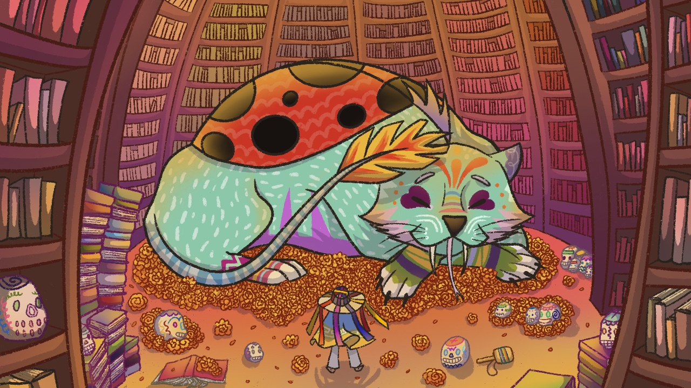
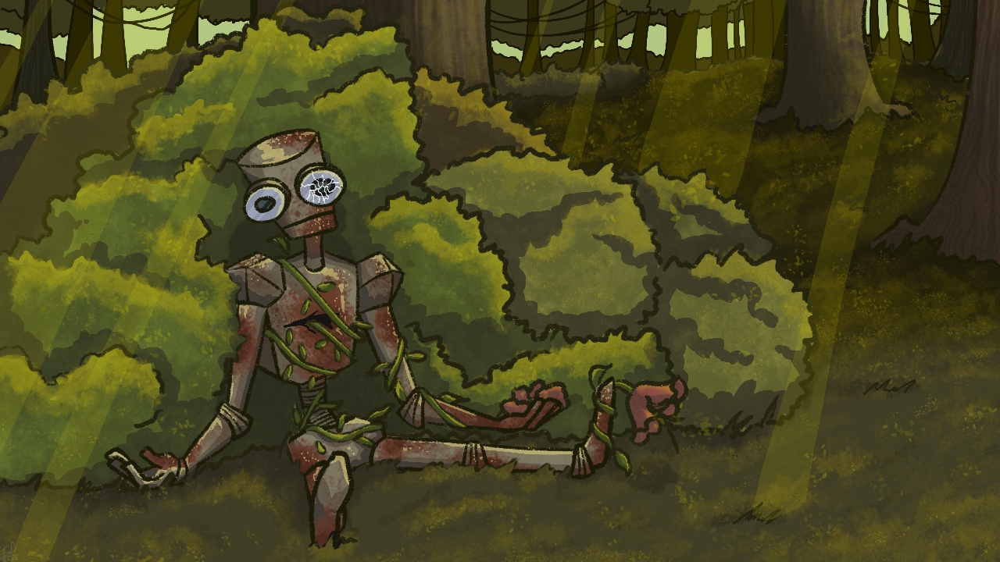
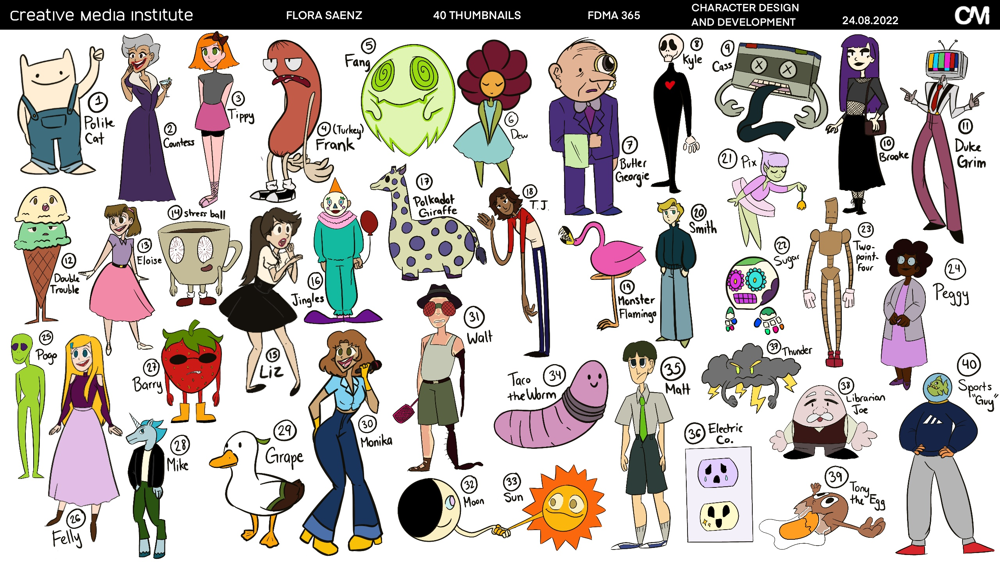

Art Projects
I started art in the 3rd grade and stuck to my physical media art for a long time, when I dipped my toes into digital art, I didn't enjoy it as much as I thought. Then, something really funny happened in March of 2020 and I had to be home with a brand new iPad that I was supposed to use for college. I downloaded Procreate...and my life was changed. Here are some of my favorite original digital art pieces.
1. This is the first ever digital piece that I was proud of...and I still am. It is based off of Alebrijes, a Mexican folklore figure that holds wisdom and guides humans. This was my first time fully coloring a piece inclusing the background and working with a non-human creature.
2. This piece was part of a freestyle assignment. I have always been very drawn to art or stories where nature "reclaims" space in the world. I did a tiny take on it with a broken down robot being tangled by weeds and grass. Something I particularly like about this piece is the rays of light (which is the first time I ever drew them into one of my pieces) and the posing of the robot.
3. 40 completely original characters! This assignment alone made me realize I have a very high bandwidth for coming up with character ideas. Some of these, objectively, are very surface-level and even a little bit of low-hanging fruit to come up with. I will say, at least five of these characters have been transferred into other potential projects of mine.
4. This is one of my best 3D models. I made this in Zbrush and the assignment consisted on creating a Kaiju. I remember the sound of my laptop fan going insane at the creation of this. I would say this took me about 12 hours to complete.
5. Talk about a crazy model. This was a 3D study on Zbrush where I analyzed the body parts of an insect. Super interesting assignment to say the least. This took me about 5-6 hours because I had a reference.
6. This was one of my Motion Capture assignments. I will admit most of this animation came out a little rough, especially with some of the objects passing through the character as well as the lack of finger movement and lipsynch. You'll notice my gorgeous voiceover in the animation and that was a very last minute decision that I don't regret. A fun fact about that is that I had to whisper-talk because my roommate was dead asleep on the next room. I edited the video as well so all those silly sound effects are part of my own plan. Sometimes I miss those all-nighters.